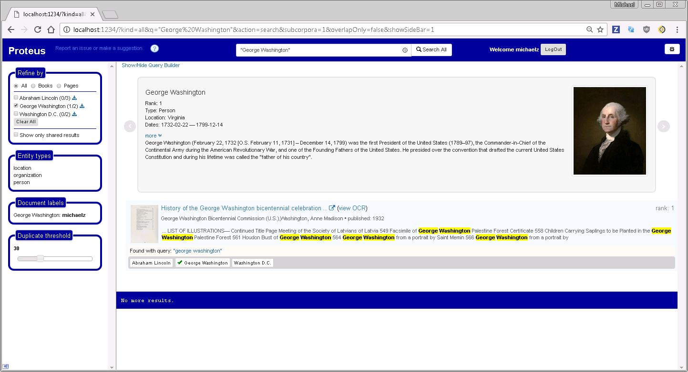
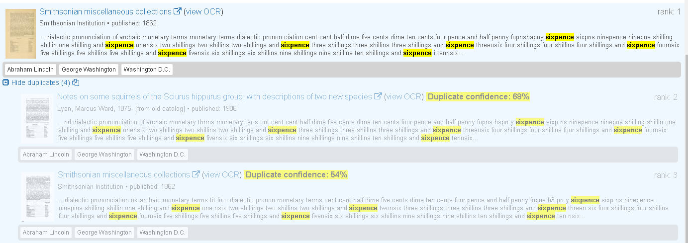

Proteus is used to search books and/or pages from the Internet Archive that have been processed into a format that Proteus can then create an index from.
current version is book only - not acm papers
Simply use your email address, no password is required at this time.
Proteus allows you to limit the scope of your search using the "Refine by" options in the left side bar of the main search page. You can limit your search to pages, books, or all - which searches books, pages, and (if using Galago) notes.
You can also search within all the documents that have specific label(s). The numbers after the label tell you how many documents were retrieved out of the number available. When one or more labels are selected, all documents will be returned if you do not enter any query terms.
When you find a document that is relevant for a label, simply click on the appropriate button under the document to label it.
When you label a document, a check mark () will be displyed. If someone else labeled the document a "thumbs up" () will be displayed.
You can see who labeled a document by hovering over the document and looking at the "Document labels" section on the left sidebar.
Document types - color on hover
Sometimes duplicate documents are returned for a search. Proteus uses the snippet of text shown in the search results to determine if documents are duplicates.
The "Duplicate Threshold" slider on the left sidebar can be used to adjust what is considered a duplicate. The default is 30, a value of 100 would indicate that the snippets would have to be an exact match which is quite rare due to OCR errors. A value of zero would result in no duplicates. Below is an interesting example that results from the search for the term "sixpence". From the results returned, Proteus determined that there are four duplicates of the first document (only two are shown in the image below). Looking at the thumbnails they certainly appear to be duplicates, however the title of the first duplicate would in no way indicate that they are duplicates. Closer examination of the actual documents shows that they are indeed duplicates. Here is the first document and the second document.
